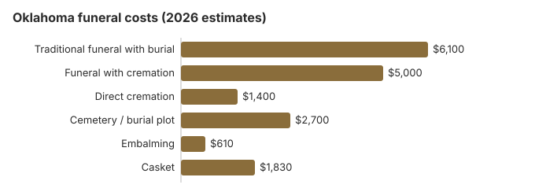

Funeral Costs in Oklahoma: What Families Pay in 2026
Oklahoma funerals cost less than the national average, and with a cremation rate of about 45%, burial is still the more common choice. Our 2026 estimates put a traditional service near $6,100 and direct cremation near $1,400.
Oklahoma Funeral Prices in Detail
The Funeral Board licenses Oklahoma homes; it does not set what they charge.
| Item | Our figure | Range seen |
|---|---|---|
| Traditional funeral with burial | $6,100 | $4,575 – $7,930 |
| Funeral with cremation | $5,000 | $4,000 – $6,500 |
| Direct cremation | $1,400 | $980 – $1,960 |
| Cemetery / burial plot | $2,700 | $1,350 – $5,400 |
| Embalming | $610 | $500 – $1,500 |
| Casket | $1,830 | $610 – $4,880 |
On these figures: they come from our cost model, not from calls to Oklahoma funeral homes, so use them to budget rather than as a quote or advice. How the model works; disclaimer.
State sources: Oklahoma Funeral Board; 56 O.S. § 54.

What Shapes an Oklahoma Bill
Oklahoma law shapes the bill in one specific way. Under 59 O.S. §396.12b, every funeral must be carried out under the personal supervision of a licensed funeral director from the first call until interment, and embalming may only be done by a licensed embalmer. That rule does not apply to relatives by blood or marriage who handle a burial themselves, which leaves room for a family-directed service. Paid supervision is still the norm, so the quote you receive reflects local competition and facility costs. Oklahoma sits in the South, where pricing generally runs below the US median of $8,300, and metro and rural homes in the state often differ by 10-30%.
Oklahoma's 45% cremation rate trails NFDA's 63.4% national projection for 2025 by 18.4 points.
Lower-Cost Oklahoma Arrangements
| Type | Estimate | Included |
|---|---|---|
| Direct cremation | $1,400 | Cremation without a gathering; a permit but no waiting period (63 O.S. § 1-329.1). |
| Direct burial | $3,050 | Burial within a day or so, unembalmed; plot and grave opening are a separate cemetery charge. |
| Green burial | $3,355 | A shroud or plain biodegradable casket, where the cemetery permits. |
| Cremation + memorial | $5,000 | Cremation first, a church memorial later |
| Traditional funeral | $6,100 | Visitation, funeral and graveside |
More on Oklahoma Cremation and Burial
Two related Oklahoma pages:
Cremation Costs in Oklahoma
Cremation prices from about $1,400 direct to $5,000 with a service, plus Oklahoma's rule on dividing ashes; 45% of families cremate.
Burial Costs in Oklahoma
An Oklahoma burial from plot (about $2,700) to headstone, totaling $13,560 to $18,060.
Federal Protections in Oklahoma
Complaints about an Oklahoma home can go to ftc.gov; the Funeral Consumers Alliance gives free advice.
Oklahoma Charges to Challenge
- Embalming presented as required when the body could simply be refrigerated.
Oklahoma Prices by City
Oklahoma city estimates:
Church Services and Oklahoma Costs
Church involvement, homegoing services and repast meals are still central to many Oklahoma funerals, and congregations often reduce or cover the venue for members. Ask whether a quote assumes the funeral home chapel or your church; holding it at church often cuts the facility fee by $500-$1,500.
Oklahoma: Burial Versus Cremation
Cremation
- About $1,400 direct
- Roughly $5,000 once a viewing or service is added
- Ashes can be kept, scattered or divided among family
- A homegoing or memorial can be held weeks later
- 45% of Oklahoma families
Traditional Burial
- Service about $6,100
- Oklahoma plots average about $2,700
- Many cemeteries require a vault or grave liner
- Room for a family plot and headstone
- Metal casket: $2,500 US median (NFDA 2023 General Price List Study); Oklahoma prices vary by seller
Oklahoma Funeral Assistance
- With no money for a funeral, the county commissioners arrange burial and the county pays to open and close the grave (56 O.S. § 54).
- Social Security's one-time $255 is claimed by a widow, widower or eligible child at 1-800-772-1213 within two years.
- For an Oklahoma veteran, the person who covered the funeral bill claims the VA allowance on Form 21P-530EZ: up to $1,032 for burial plus $1,032 for a plot when a non-service-connected death falls on or after October 1, 2026. Eligibility rules for Oklahoma families are in our veteran burial benefits guide.
- Medicaid and charity options are in our assistance guide and no-money guide.
Educational Resources
- Funeral Consumers AllianceIndependent nonprofit consumer advocacy for funeral rights
- FTC Funeral RuleThe federal rule protecting funeral consumers
- Funeral Insurance GuideCompare final expense and burial insurance options
- Best Burial Insurance CompaniesSide-by-side comparison of top burial insurance providers
- Payment Assistance GuideGovernment programs and financial help for funeral costs
- Insurance Plan ComparisonCompare coverage, premiums, and payout speed across providers
Compare Funeral Costs
- Average Funeral Cost in 2026National cost breakdown with real prices
- Cremation vs. Burial Cost ComparisonSide-by-side price comparison to help you decide
- Funeral Cost BreakdownEvery line item explained: know what you're paying for
- Cheapest Funeral OptionsLower-cost alternatives, with typical price ranges
- Direct Cremation: Most Affordable OptionNFDA 2023 median $2,645 with a family-supplied container (latest available)
- How to Compare Funeral PricesStep-by-step guide to getting the best price
Planning an Oklahoma Funeral
These steps, roughly in order, avoid the costliest mistakes:
- Choose burial or cremation: cremation in Oklahoma or burial in Oklahoma.
Oklahoma death certificates: $15 each
The Oklahoma State Department of Health charges $15 per certified death certificate. That $15 is a non-refundable search fee that includes the first copy if the record is found, and every additional copy is another $15 (Okla. Admin. Code 310:105-1-3). Ordering online or by phone through VitalChek at 405-426-8880 costs $20 for the first copy for an Oklahoma resident, because VitalChek adds a $5 fee ($12.95 for out-of-state orders), and expedited service costs more (OSDH, vital records FAQs; checked October 29, 2026).
- Closed records: Oklahoma death records are not open to the public, so the applicant has to meet eligibility rules and send photo ID.
- Speed: online and phone orders are processed in about two business days and can be picked up at "Will Call"; mail orders to OSDH Vital Records, P.O. Box 248964, Oklahoma City, OK 73124-8964, take weeks. Walk-in lobbies are closed.
- Corrections: fixing a non-medical item costs $35 with one copy included; corrections to the medical certification carry no amendment fee.
Oklahoma gives no discount for extra copies, so four certificates cost $60 by mail. Ask each insurer or bank whether it will accept a copy before ordering more.
Oklahoma's funeral board, county burial and veterans cemeteries
The Oklahoma Funeral Board (405-522-1790) licenses funeral directors, embalmers and funeral homes, and takes complaints about prices or a missing price list.
The Funeral Consumers Alliance leaves Oklahoma off its list of states requiring a funeral director, and 59 O.S. § 396.12b exempts relatives who handle a burial themselves. Someone still has to file the death certificate and get a disposition permit, and cremation needs a permit though there is no waiting period (63 O.S. § 1-329.1).
When the county pays
Oklahoma has no state funeral grant. For a person who dies in a county without means, the county commissioners, acting as overseers of the indigent, arrange and supervise the burial, and the county treasurer pays the grave opening and closing on their order (56 O.S. § 54). Social Security's $255 goes only to a spouse or child who claims it within two years, never to the funeral home.
Veterans
Fort Gibson National Cemetery near Muskogee (918-478-2334) and Fort Sill National Cemetery near Elgin (580-492-3200) are reserved by the funeral home through the VA's National Cemetery Scheduling Office (800-535-1117). Three tribal veterans cemeteries take requests directly: Seaman First Class Billy Turner Veterans Cemetery (580-490-6489), Seminole Nation and Veterans Memorial Cemetery (405-295-4549) and White Eagle Cemetery (580-762-8104).
Prepaid funerals
A funeral home selling prepaid funerals in Oklahoma needs a separate permit for each location from the Oklahoma Insurance Department, renewed every year, and must keep a bond or letter of credit equal to 15% of its trust on file (36 O.S. §§ 6121-6136.18). The contract is not insurance. A guaranteed contract locks today's price for the listed goods and services, while a non-specified contract only applies the trust balance and refunds anything unused. A guaranteed contract cannot add charges for those listed items later. Cash-advance items such as death certificates, flowers and obituaries are never guaranteed. Ask where the trust money is held; you are entitled to know. Someone who expects to need state assistance may put up to $10,000 into an irrevocable trust or insurance assignment for a funeral, which an Oklahoma permit holder can set up.
Oklahoma checklist
- Ask for each home's General Price List in person; it must be handed over.
- A memorial after cremation or a prompt burial avoids embalming under the Funeral Board's 24-hour rule.
- With no money for a funeral, call the county commissioners before signing anything.
- For a veteran, ask about Fort Gibson or Fort Sill before buying a plot.
- Report price-list problems to 405-522-1790.
Frequently Asked Questions
What does an Oklahoma funeral cost in 2026?
On our estimates, $6,100 for a traditional funeral, 27% under the $8,300 US median; $5,000 for cremation with a service; and $1,400 and up for direct cremation. A burial adds about $2,700 in cemetery charges.
How much can cremation save in Oklahoma?
Often more than $4,700: about $1,400 for direct cremation against $6,100 for a traditional funeral before the plot. About 45% of Oklahomans choose cremation, against NFDA's 63.4% national projection.
What protections do Oklahoma families have?
Under federal rules a home must itemize its prices, quote them by phone and sell you only the items you pick. Relatives may handle a burial themselves (59 O.S. § 396.12b). Complaints go to the Oklahoma Funeral Board, 405-522-1790.
Where can an Oklahoma family save?
Get price lists from three homes, ask your church about hosting the service, pay only for the items you choose, and if price decides it, direct cremation near $1,400 is the cheapest route.
Is embalming legally required in Oklahoma?
Not in Oklahoma when the body is refrigerated instead, though the time limits are short. The Funeral Board's rule (Okla. Admin. Code 235:10-11-1) requires an unembalmed body to be buried or cremated within 24 hours of death unless it is kept at 40°F or less, and once it leaves refrigeration it must be embalmed or disposed of within eight hours. The rule also bars public viewing of an unembalmed body more than 24 hours after death.
So a viewing held more than a day after death means paying for embalming, about $610 on our Oklahoma estimate, while direct cremation or a prompt burial does not. The Oklahoma Funeral Board (405-522-1790) licenses the homes that charge for it.
Is Oklahoma cheaper than other states?
Yes. Our $6,100 traditional estimate is 27% under the $8,300 national median, in line with lower Southern prices.
What is the least expensive Oklahoma funeral?
Direct cremation, starting near $1,400 in Oklahoma. Direct burial is the next step up at about $3,050, which is $3,050 below a traditional Oklahoma funeral.
How do I find an affordable Oklahoma funeral home?
Ask three homes for price lists and compare their direct cremation line, which starts near $1,400.
The OU Health Sciences Center's Willed Body Program, overseen by the State Anatomical Board, accepts whole-body donations for medical teaching. After study, the body is cremated and the ashes can be returned to the family, scattered on university property, or included in a group interment. Ask the program about any transport costs before registering.